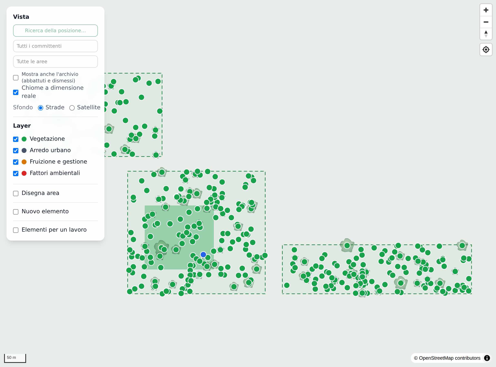
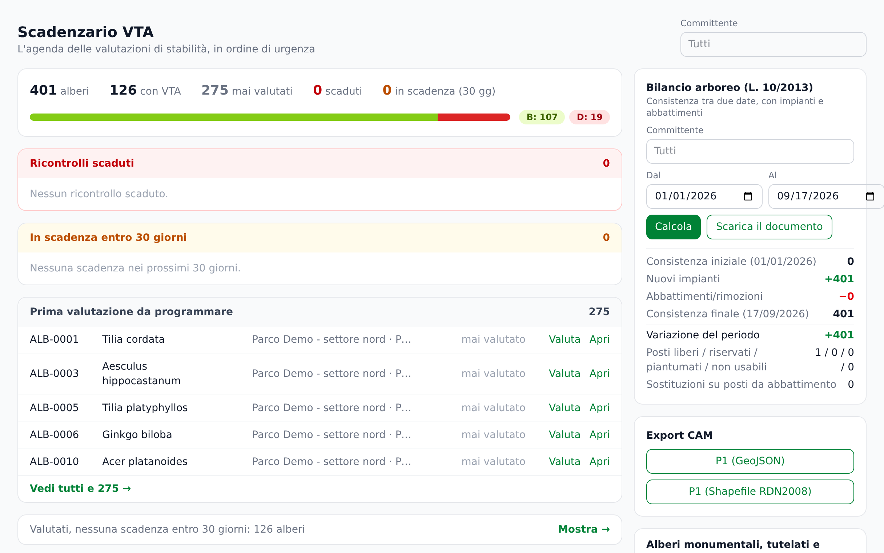
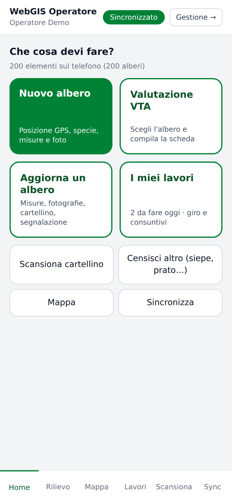
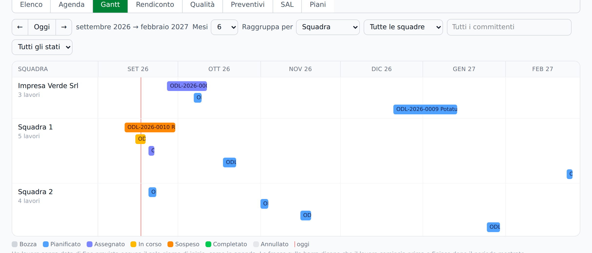
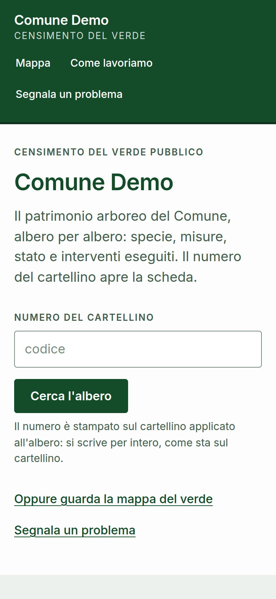
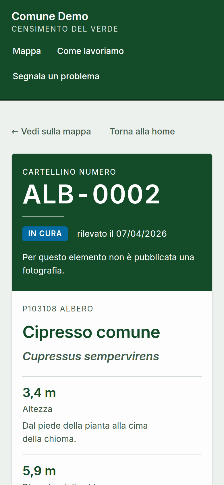
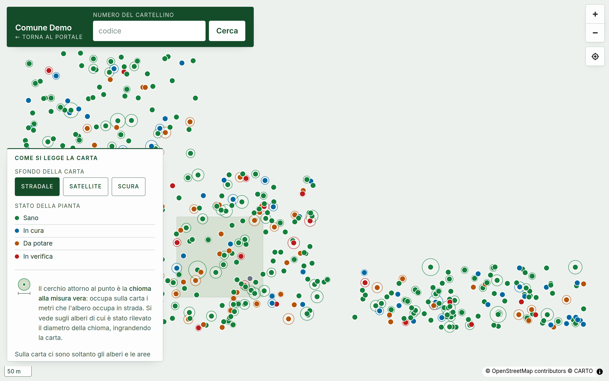

Il registro del verde di un territorio in un solo programma: dove sta ogni albero, che cosa è, come sta, che cosa gli è stato fatto e quando. Da quel registro escono le consegne nei formati richiesti dai Capitolati Ambientali Minimi, le valutazioni di stabilità, i lavori con la loro contabilità e il portale che i cittadini vedono.
tipi di elemento del Modello Dati ministeriale, già installati
documenti PDF pronti: schede, perizie, verbali, registri, preventivi, SAL, relazioni
formati di scambio: CSV, Excel, GeoJSON, Shapefile e pacchetto CAM
cookie sul portale pubblico: niente da far accettare, niente da dichiarare
Censimento, mappa, valutazioni di stabilità, lavori, registri e consegne. Dal computer e dal telefono.
Rilievo con GPS, fotografie, cartellini, consuntivi e ispezioni. Funziona anche senza rete e si allinea da sola.
Il portale pubblico di ogni Comune, l'area riservata del committente, il portale delle imprese a cui si affidano lavori.
Catalogo ministeriale, mappa, schede, cartellini, importazioni ed esportazioni CAM.
Scheda dell'albero, VTA, perizie validate, scadenzario, bilancio arboreo, benefici ambientali.
Rilievo con GPS e fotografie, cartellini, consuntivi, ispezioni: anche senza rete.
Ordini, agenda, Gantt, listini, preventivi, SAL, piani pluriennali, imprese esterne.
Ispezioni, non conformità, segnalazioni, fitosanitari, patentini, irrigazione, le dieci stampe.
Il portale pubblico del Comune, l'area riservata del committente, il portale delle imprese.
Ruoli, storico, formati aperti, server in Italia, come si parte e come si prova.
Depliant informativo, edizione settembre 2026.
Ogni elemento del verde, dall'albero alla panchina, ha una posizione, un tipo del catalogo ministeriale, le sue misure, le fotografie e la storia delle modifiche.
Committenti, sedi con codice ISTAT, località e aree disegnate sulla mappa, con superficie e perimetro calcolati da soli. Vincoli con il documento allegato, che la scheda dell'albero mostra da sé. Contratti con CIG, CUP, importo e durata.
I 387 tipi del Modello Dati per il censimento del verde urbano, richiesti dalle consegne CAM, già installati e non modificabili. A ogni tipo si aggiungono campi propri, per esempio la larghezza delle siepi, e se serve tipi personalizzati fuori dal tracciato.
Tipo, misure, attributi, fotografie con la data dello scatto, cartellini collegati, vincoli, note. La storia delle modifiche dice chi ha cambiato che cosa e quando. Un albero abbattuto si registra con data e motivo: esce dagli elenchi, resta nel registro.
Tutto il patrimonio sulla carta, con le chiome disegnate in scala reale. Sfondi propri per ogni committente, come l'ortofoto comunale o la carta tecnica regionale, via WMS o a riquadri. Le aree si disegnano direttamente qui.
Filtri per committente, area, tipo, specie, stato e data di rilievo, salvabili come viste con un nome, personali o condivise. Ricerca a parole che ignora gli accenti e ricerca rapida da tastiera. Le azioni su più schede dicono prima quante ne cambierebbero.
Da ogni scheda si stampa il cartellino A6 con codice e QR: chi lo inquadra vede una pagina con foto e dati essenziali, senza accesso, che si accende e si spegne elemento per elemento. La scheda si stampa in PDF scegliendo le sezioni.

Il dato resta di chi lo ha pagato: formati aperti, nessun archivio chiuso.
Excel o CSV di un censimento esistente, con l'abbinamento delle colonne che si salva per la volta dopo; GeoJSON; consegne CAM di altri fornitori. Ogni importazione fa prima una prova a vuoto e mostra l'anteprima.
CSV ed Excel dell'elenco così come si vede; GeoJSON e Shapefile per il sistema cartografico dell'ente; consegna CAM completa: tutti i livelli con le codifiche ministeriali, sistema di riferimento RDN2008, fotografie e riepilogo dei conteggi.
La scheda dell'albero, le valutazioni di stabilità, le perizie e il bilancio arboreo stanno nello stesso posto del censimento: nessun dato si ricopia da un programma all'altro.
Genere, specie, cultivar e nome comune; diametro a 1,30 m, circonferenza, altezza, chioma e sua inserzione, numero di fusti; età precisa o stimata, stato vegetativo, posizione sociale, bersaglio, sito di crescita; tutori e consolidamenti; messa a dimora e abbattimento. Alberi monumentali, tutelati e dedicati.
Difetti per parte della pianta, bersagli, classe di propensione al cedimento (A, B, C, C/D, D), esito, prescrizioni e data della prossima verifica. Analisi strumentali con il referto allegato. Gli intervalli di ricontrollo per classe si impostano dall'interfaccia.
Da ogni valutazione esce la perizia in PDF con protocollo, data di emissione, fotografie e riga per la firma. Validata, si congela: contenuto bloccato, impronta SHA-256, fotografie fissate alla firma. Ristampata fra un anno è identica. Si valida anche in blocco.
Ogni albero ha la data del prossimo controllo. Con un gesto i ricontrolli dovuti diventano ordini di lavoro in agenda, senza doppioni anche se lo si preme due volte. Il cruscotto Oggi conta anche quelli ancora senza ordine.
Messi a dimora, abbattuti e sostituiti fra due date, per committente, con la stampa PDF pronta per il consiglio comunale o per il bilancio di fine mandato.
Anidride carbonica immagazzinata e assorbimento annuo con il controvalore economico; ossigeno, polveri sottili e pioggia intercettata. Il modello è scritto nella configurazione con i suoi riferimenti e ogni pagina dichiara il metodo. In pubblico escono solo se il committente li accende.

Una perizia validata, ristampata fra un anno, è identica: fotografie comprese.
Lo stato che vedono i cittadini (sano, in cura, da potare, in verifica) non si scrive a mano: nasce dall'ultima valutazione e dai lavori aperti, con una regola sola, e cambia da solo quando si chiude un lavoro o si registra una nuova valutazione.
La valutazione si compila nel gestionale, dove si ha tutto sotto gli occhi; in campo si fanno sopralluogo, fotografie e appunti, e l'app apre la scheda giusta.
L'app di campo si installa sul telefono e lavora senza copertura: tutto resta in coda sul dispositivo e parte da solo appena torna la rete. Sotto gli alberi e nei parchi non è un dettaglio.
Nuovo albero; misure, fotografie, cartellino e segnalazione su un elemento già in archivio; ispezione di un'area con lista di verifica; valutazione VTA, che apre la scheda giusta nel gestionale. Chi entra come operatore arriva qui direttamente.
GPS con l'indicazione della precisione e il punto spostabile a mano; l'app propone l'area in cui ci si trova. Specie cercata per nome comune o botanico; diametro, altezza e chioma con le stesse quote per tutti gli alberi.
Le foto scattate dall'app finiscono nella scheda giusta e partono con la sincronizzazione. Il cartellino si registra con la fotocamera (QR e codici a barre), con un lettore esterno o digitando il codice; l'archivio registra anche tag NFC e RFID.
Gli ordini assegnati alla squadra con gli elementi da lavorare, l'avvio, la sospensione e il consuntivo: ore, quantità, mezzi, attrezzature, materiali. Il giro del giorno ordina i lavori per vicinanza e la navigazione porta all'elemento.
Le liste di verifica si compilano sul posto, con le foto; una segnalazione si apre in due passaggi. Anche queste vanno in coda e si allineano da sole.
La scheda Sync dice quante operazioni aspettano e, se il server ne rifiuta una, il motivo scritto chiaro: si corregge o si scarta, e nulla resta a metà. Il registro attività tiene traccia di tutto.

Senza rete si lavora lo stesso: la coda parte da sola appena torna il segnale.
Come si lavora, in una giornataSi scaricano i dati di lavoro: aree, catalogo ed elementi già censiti della zona.
Posizione, tipo, specie, misure, foto, cartellino. Il codice lo assegna il programma.
Si continua a lavorare: ogni registrazione va in coda, numerata in ordine.
Sincronizza ora, e si aspetta la scritta "Sincronizzato": da lì i dati sono al sicuro.
Le stesse funzioni si usano anche dal computer, dalla voce Campo del menu: per provare, o per lavorare in ufficio con gli stessi strumenti.
Ogni intervento è un ordine con un codice, gli elementi coinvolti, la squadra e uno stato che avanza: bozza, pianificato, assegnato, in corso, sospeso, completato o annullato. Chiuso l'ordine, la storia dell'albero si aggiorna da sola.
Elenco, Agenda per giorno e per squadra, Gantt sulla linea del tempo, Rendiconto per committente e periodo valorizzato dal listino, Qualità, Preventivi, SAL e Piani.
Collegando un elemento a un ordine, i metri quadrati vengono dalla superficie del poligono, i metri dalla lunghezza, "cadauno" vale uno per elemento. Il prezzo del listino fa il resto.
Voci con prezzo per unità di misura, spese generali e oneri di sicurezza. Il preventivo si compone dal catalogo delle lavorazioni o con voci libere, calcola l'IVA, esce in PDF e, accettato, diventa ordine di lavoro con un clic.
Stati di avanzamento con IVA per riga e spese generali ripartite in proporzione, validazione, fatturato e incasso registrati, stampa PDF ed elenco dei crediti ancora aperti.
Lavorazioni ricorrenti per area con intervallo in mesi e finestra stagionale. Gli ordini dovuti in un periodo si generano in blocco, con l'anteprima di quanti ne nascerebbero e senza doppioni.
Le squadre interne lavorano per chiunque; un'impresa appaltatrice appartiene a un committente e le si affidano solo i suoi lavori. Dal suo portale vede gli ordini e chiede la riprogrammazione con un motivo codificato; decide l'ufficio.

Quello che il programma annuncia in anteprima è quello che fa.
Lavori in ritardo e dei prossimi sette giorni, controlli scaduti, segnalazioni fuori tempo, non conformità, patentini, ricontrolli VTA, stagione irrigua. Le stesse voci per email ogni mattina, solo se c'è qualcosa da dire.
L'agenda dei lavori e le scadenze si leggono da Google Calendar, iPhone e Outlook con un abbonamento personale, senza aprire il gestionale.
Consistenze per tipologia e specie, alberi per classe di stabilità, ordini per stato e per mese, segnalazioni con i tempi, trattamenti per anno.
Ispezioni, segnalazioni, trattamenti, abilitazioni e irrigazione nello stesso programma del censimento, ognuno con la sua stampa.
Modelli per aree o per elementi con domande sì/no, testi e numeri; periodicità e scadenzario con i ritardi in cima. L'esito è calcolato dalle risposte e ogni voce negativa può aprire da sola una non conformità.
Con un gesto si installano la scheda dell'attrezzo e tre liste di verifica costruite sulla struttura della norma EN 1176 (non il suo testo, che è protetto). Gli adattamenti già fatti restano.
Aperta, azione correttiva, verificata, chiusa: ogni non conformità ha il suo percorso. Il verbale di controllo qualità si compila dal dettaglio dell'ordine di lavoro.
Codice, gravità e due scadenze fissate dal programma: presa in carico entro 1-10 giorni e risoluzione entro 3-30, secondo la gravità. Arrivano dai colleghi, dal portale del committente o dai cittadini, e con un pulsante diventano un ordine.
Il quaderno di campagna: data, area o singolo albero, coltura, prodotto con numero di registrazione, principio attivo, avversità, metodo, quantità, acqua, superficie, tempo di rientro, chi ha eseguito. Il registro dell'anno si stampa in PDF.
Patentino fitosanitario, abilitazioni, corsi sulla sicurezza, taratura dell'irroratrice, assicurazioni: intestatario, ente, numero, date. Scaduto in rosso, in scadenza entro 60 giorni in ambra, e tutto nel cruscotto Oggi.
Impianti per area con settori, portata e programma settimanale, stagione di apertura e chiusura, stato. Le letture del contatore danno il consumo e lo confrontano con la stima del programma: una perdita salta all'occhio.
La relazione annuale del verde per committente: patrimonio, bilancio arboreo, lavori, controlli, segnalazioni, trattamenti, stima CO2 e fotografie. La scheda della località con superfici totale e gestita, piante, documenti e planimetrie.
| Stampa | Che cosa contiene | Da dove esce |
|---|---|---|
| Scheda dell'elemento | Dati, misure, foto, posizione; sezioni a scelta | Scheda del censimento |
| Cartellino QR | Formato A6 con codice e QR verso la pagina pubblica | Scheda del censimento |
| Perizia di stabilità | Protocollo, valutazione, difetti, fotografie, firma | Valutazione VTA |
| Bilancio arboreo | Messi a dimora, abbattuti, sostituiti fra due date | Pagina VTA |
| Verbale di ispezione | Lista di verifica compilata, esito, foto | Dettaglio dell'ispezione |
| Registro fitosanitari | I trattamenti dell'anno, anche per una sola area | Pagina Fitosanitari |
| Preventivo | Voci, quantità, prezzi, IVA, totale | Vista Preventivi |
| SAL | Righe, IVA per aliquota, spese generali, totale | Vista SAL |
| Scheda della località | Superfici, piante, lavori, planimetrie delle aree | Pagina Territorio |
| Relazione annuale | Il lavoro dell'anno per un committente | Pagina Lavori |
Nessun dato esce da solo. Ogni lavoro, perizia e vincolo ha il proprio interruttore "pubblico"; i singoli alberi si possono nascondere; le note interne e le fotografie dei difetti non escono mai.



Il Comune o il cliente privato entra con il proprio utente e vede solo il suo territorio: aree, elementi censiti, ultimi lavori completati e segnalazioni, senza dati economici. Può inviare una richiesta con descrizione, urgenza e fino a tre fotografie, e ne segue lo stato e l'esito.
Un ingresso dedicato per le ditte a cui si affidano lavori: vedono solo gli ordini delle proprie squadre e chiedono formalmente una riprogrammazione, con motivo e data proposta. La decisione resta all'ufficio e tutto rimane agli atti.
Ogni organizzazione vede solo i propri dati. Dentro, cinque ruoli di serie (amministratore, tecnico, operatore, cliente, impresa) e ruoli su misura con i permessi scelti uno per uno, spiegati in italiano.
Storia delle modifiche su ogni scheda, registro delle operazioni, eliminazioni che restano in archivio. Se due persone salvano la stessa scheda, la seconda viene avvisata: nessuna modifica va persa in silenzio.
Nessun caricamento fallisce in silenzio: ogni avviso porta il numero dell'errore e il pulsante Riprova, e le richieste respinte per motivi passeggeri si ripetono da sole.
Formati aperti in uscita (CSV, Excel, GeoJSON, Shapefile, CAM) e importazione dai file di altri. Se domani cambiate fornitore, il lavoro fatto non si perde.
Dieci stampe con lo stesso impianto: una sola data per foglio, riga "Luogo, data" per la firma, fotografie con didascalia, nessuna risorsa esterna, perizie immutabili dopo la validazione.
Installazione su un server cloud in data center italiano, certificato HTTPS automatico, copia di sicurezza giornaliera di dati e fotografie, aggiornamento con un comando e diagnosi del server in italiano.
Organizzazione, utenti e ruoli, dati di chi firma.
Committenti, sedi, località, aree e vincoli.
Importazione da Excel, CSV, GeoJSON o CAM, con anteprima.
Con l'app e i cartellini; controllo in ufficio.
Quando il censimento è presentabile e l'ente è d'accordo.
Il programma prepara con un comando un Comune di prova con alberi, valutazioni e lavori verosimili: portale e gestionale si vedono prima di avere i vostri dati, e la prova continua con i vostri.
La guida all'uso è dentro il programma e il manuale operativo è in italiano semplice: prima il territorio, poi il rilievo, poi le consegne.
Si parte dal vostro patrimonio: un'area, un viale, un parco. Si importa quello che avete, si accende il portale di prova, si guarda il programma con i vostri dati.
DAMA S.R.L. · Via Crescenzio 58, 00193 Roma (RM) · Partita IVA e codice fiscale 17947161000 · REA RM-1751463 · Capitale sociale € 1.000,00 sottoscritto